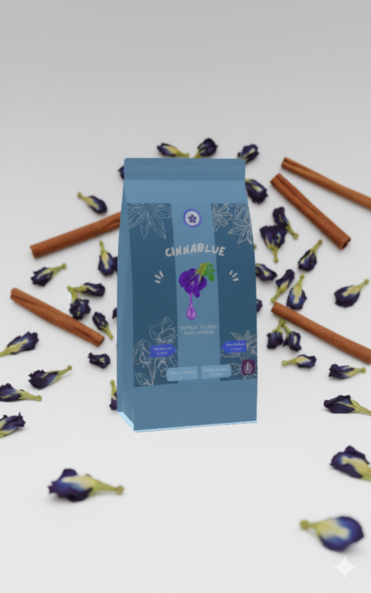

Temukan Ketenangan dalam Secangkir Cinnablue.
Cantik Dipandang, Bermanfaat bagi Kesehatan.
Perpaduan premium Bunga Telang, kehangatan Kayu Manis, dan sentuhan Madu Murni. Minuman ini diracik untuk memanjakan mata sekaligus menenangkan jiwa Anda.
(Promo Launching Terbatas!)
Kebaikan Alami di Setiap Gelas
Cinnablue diracik dari tiga bahan alami terbaik, masing-masing dengan manfaat uniknya untuk tubuh dan pikiran Anda.
Bunga Telang
Dikenal dengan warna birunya yang cantik, Bunga Telang kaya akan antioksidan yang membantu melawan radikal bebas dan memberikan efek relaksasi.
Kayu Manis
Memberikan aroma rempah yang hangat dan menenangkan. Kayu manis juga dikenal baik untuk membantu menjaga kestabilan gula darah.
Madu Murni
Sentuhan pemanis alami yang tidak hanya lezat tapi juga penuh manfaat kesehatan, melengkapi cita rasa Cinnablue menjadi sempurna.
Satu Menit Menuju Relaksasi
Nikmati Cinnablue dengan cara yang sangat mudah dan praktis.
- 1 Seduh 1 sendok teh Cinnablue dengan air panas (bukan mendidih, sekitar 90°C).
- 2 Diamkan selama 5-7 menit hingga warna biru pekat yang cantik keluar sempurna.
- 3 Saring dan tambahkan madu murni sesuai selera Anda.
- 4 Aduk perlahan dan nikmati ketenangan dalam setiap tegukan.

Klaim Ketenangan Anda Sekarang
Jangan lewatkan harga promo launching terbatas kami. Pesan Cinnablue hari ini dan rasakan sendiri manfaatnya.
(Promo Terbatas!)